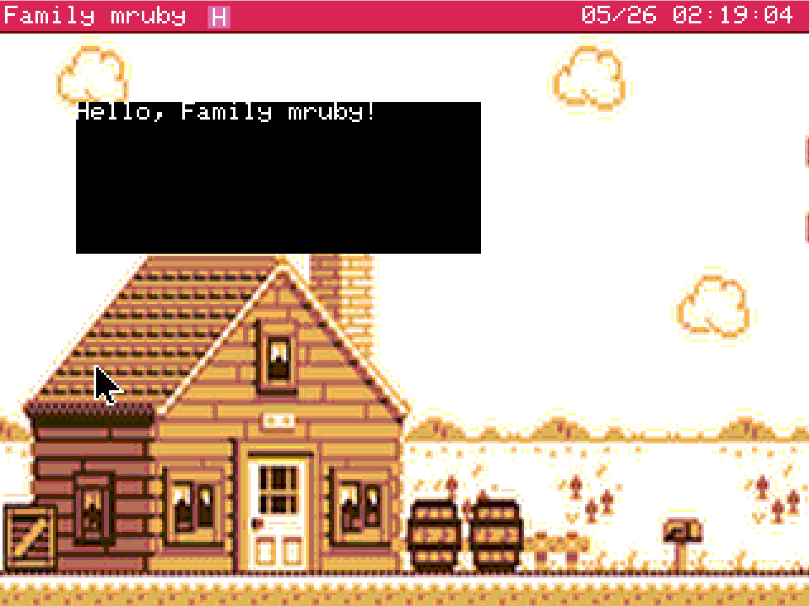
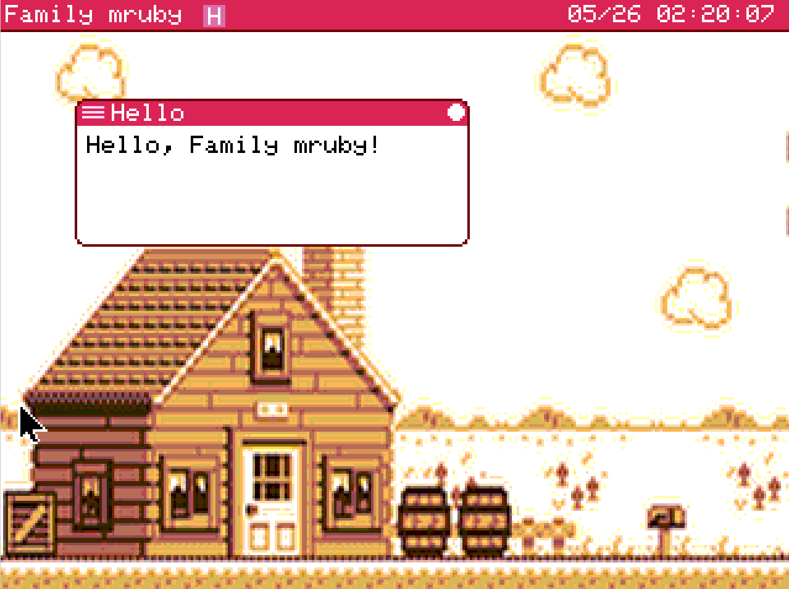

Hello World¶
Run a minimal GUI app that displays "Hello, mruby!" on screen, and learn the workflow for writing your own apps.
This page covers a GUI app example
Family mruby apps fall into two main categories: GUI apps that draw to the screen, and headless apps that run in the background without a display. This page walks through a minimal GUI app.
A headless app declares default_window_mode = "background" in its .app.toml; its @gfx is nil.
Minimal app structure¶
A Family mruby app consists of a pair of 2 files.
hello.app.rb # App body (Ruby)
hello.app.toml # Configuration file
Place both files under /app/<directory-of-your-choice>/, then rescan from the launcher (described below) or restart the board, and the app icon will appear.
Step 1: A minimal app that just displays text¶
Let's write an app that simply draws "Hello, Family mruby!" on the screen.
This sample does not allow closing the window
@gfx.clear fills the entire canvas including the title bar. The title bar and close button drawn by the FmrbApp base class at startup are overwritten and disappear, so the close button is no longer visible on screen. To exit, reset the board once.
The next sample adds window frame drawing.
Create /app/usr/hello.app.rb and implement the code below.
You can write the code in the default app editor or via the web console. See Console for details on the console.
/app/usr/hello.app.rb file¶
class HelloApp < FmrbApp
def on_create
@gfx.clear(FmrbGfx::BLACK)
@gfx.draw_text(0, 0, "Hello, Family mruby!", FmrbGfx::WHITE)
@gfx.present
end
end
Code explanation
| Code | Role |
|---|---|
class HelloApp < FmrbApp |
App class that inherits from FmrbApp |
on_create |
Initialization called once at startup |
@gfx.clear(...) |
Fills the entire canvas with black |
@gfx.draw_text(0, 0, ...) |
Draws text at (0, 0), the top-left of the app's area (just inside the window frame) |
@gfx.present |
Flushes the buffer to the screen (required) |
There is no HelloApp.new.start at the end: once the file has been read, the runtime makes
the FmrbApp subclass it defines and starts it. If something goes wrong (no subclass, an
exception while starting), an error window says why.
hello.app.toml file¶
Create hello.app.toml in the same directory:
app_handle_name = "hello"
app_screen_name = "Hello"
default_window_mode = "window"
default_window_width = 160
default_window_height = 60
default_window_pos_x = 30
default_window_pos_y = 40
| Key | Purpose |
|---|---|
app_handle_name |
Internal handle name (should match the base name of the .rb file) |
app_screen_name |
Display name shown in the launcher and title bar |
default_window_mode |
"window" / "fullscreen" |
default_window_width/height |
Window size (px) |
default_window_pos_x/y |
Top-left coordinates of the window |
The same keys can instead go in a #---fmrb comment at the top of the .rb, so a one-file app needs no .app.toml. See App configuration file (.app.toml) for a full list of keys.
Launching and displaying on screen¶
- Once the implementation is done, open the launcher and right-click to rescan (or restart the board)
- The title bar shows "Rescanning..." — wait 1-2 seconds and the new "Hello" app icon will appear
- Double-click the icon (or click with the mouse then press Enter)
- "Hello, Family mruby!" is displayed on screen

Step 2: Displaying the window frame¶
In Step 1 we only drew text. To keep the title bar and close button, fill only the app's
drawable area (the user area) instead of the entire canvas. clear_user_area does that, and
puts the frame back as it goes.
Update the code as follows.
class HelloApp < FmrbApp
def on_create
redraw
end
def redraw
clear_user_area # Fill the user area with the theme's page colour
@gfx.draw_text(4, 4, "Hello, Family mruby!", theme_fg)
@gfx.present # Flush to screen
end
end
| Point | Description |
|---|---|
@gfx.clear(FmrbGfx::BLACK) to clear_user_area |
Clears the area inside the frame and redraws the frame. With no colour it uses the system theme's page colour |
theme_fg instead of a fixed colour |
The ink that goes with the theme, so the app follows the user's colours |
Drawing logic extracted into redraw |
Organized for easier redraws later |
Where is (0, 0)?
@gfx and mouse events measure from the top-left of the area the app owns: inside the
frame here, the screen's top-left in fullscreen. Its size is @user_area_width ×
@user_area_height. See FmrbApp > What the app can read for details.
Restart and run the app — the title bar and window frame will be drawn, and you should be able to close the app by clicking the button at the top right.

Reloading a running app after edits¶
After editing the code, right-click the title bar of the running app and choose Reload from the window menu. It saves you the trouble of closing and reopening the app.
Shortcut: Generate a template with create_app¶
Writing .rb and .toml files from scratch every time is tedious. The Family mruby shell has a create_app command that generates a complete set of template files based on Step 2 in one shot.
Usage¶
Launch Shell from the launcher and run:
> create_app my_clock
Created: /app/usr/my_clock.app.rb
Created: /app/usr/my_clock.app.toml
Tip: edit it with `edit /app/usr/my_clock.app.rb`
This automatically creates the following files, which you can use as a template.
/app/usr/my_clock.app.rb— Based on Step 2 (includesclear_user_area, with templates for allon_*lifecycle methods)/app/usr/my_clock.app.toml— Standard-sized window configuration
Reflecting changes in the launcher¶
The launcher scans and fixes the app list at startup, so newly added files do not appear automatically. To trigger a rescan, right-click inside the launcher window. A restart also updates the list.
App file naming conventions¶
The argument to the create_app command must contain only lowercase alphanumeric characters and underscores, starting with a letter. Examples:
| Input | Generated class name | Display name |
|---|---|---|
hello |
HelloApp |
Hello |
my_clock |
MyClockApp |
My Clock |
snake01 |
Snake01App |
Snake01 |
The class name is generated by converting snake_case to CamelCase with an App suffix, and the display name (app_screen_name) is generated in Title Case.
Destination directory¶
Templates are placed in /app/usr/ (created automatically).
Customizing the template¶
The template files themselves are located in /usr/share/template/:
/usr/share/template/app.rb.template
/usr/share/template/app.toml.template
Editing these files directly lets you customize the output of subsequent create_app calls to your preference.
| Placeholder | Meaning |
|---|---|
{{name}} |
Name in snake_case |
{{class}} |
Class name in CamelCase (with App suffix) |
{{title}} |
Display name in Title Case |
Next steps¶
- Try drawing shapes: FmrbGfx
- Add event handling: FmrbApp > Event handling
- Read existing samples: Default Apps
Troubleshooting checklist¶
Icon does not appear in the launcher¶
- Did you right-click in the launcher to rescan? (see Reflecting changes in the launcher)
- Is the
.tomlfile in the same directory as the.rbfile? - Is
app_screen_namespecified in the.toml? - Have you set
launcher_visible = false? - Is the file located under
/app/<dir>/?
App starts but closes immediately¶
- It may be crashing due to an exception. Check the logs:
- Add
Log.infoinon_createto verify progress
- Add
Nothing appears on screen¶
- Check that
@gfx.presentis being called - Check that drawing coordinates are within
0..@user_area_widthand0..@user_area_height
An error window says the app could not start¶
- The file must define a subclass of
FmrbApp. With more than one, name the one to start withclass = "..."in the.app.toml - The error window closes with a click, or with
ReturnorEsc; while it is up it holds the keyboard, so the keys do not reach the app behind it (development version)